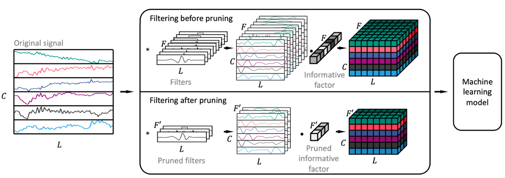
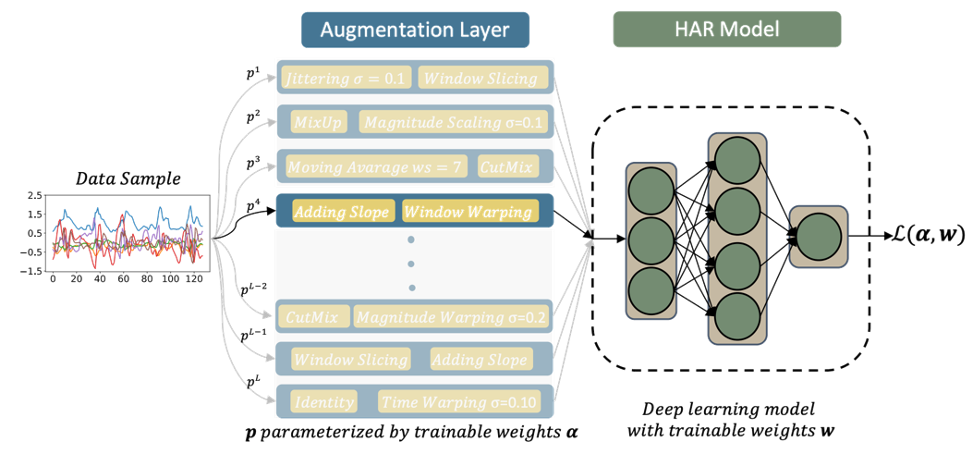

Deep neural networks have demonstrated remarkable performance across
diverse applications, yet their increasing size poses challenges.
The shallow layers of DNNs typically focus on feature extraction,
while the deeper layers concentrate on the specific task. Therefore,
by enhancing the efficiency of the feature extraction process, the
overall complexity of the DNNs can be reduced. Moreover, given that
deep learning is inherently data-driven, it is susceptible to
overfitting. This is especially true for the sensor-based human
activity recognition (HAR) tasks, because the difference among
individuals are significant, and, due to the difficultes in labeling
sensor-based HAR data, the scale of HAR datasets is generally small
A primary cause of this overfitting is that the features extracted
by DNNs overfit the target task. Employing more generalized features
may mitigate this issue, leading to higher generalization of DNNs.
Learnable Sparse Wavelet Layer
Considering the aforementioned problems, we tried to use more
general wavelets for feature extraction and sparsified the used
wavelets by pruning method. The proposed method greatly reduces the
computational effort of the model (including the wavelet layer) and
improves the classification accuracy.

Figure 1: Learnable sparse wavelet layer for data preprocessing
for human activity recognition (HAR) tasks.
Automated feature engineering
As a part of the data preprocessing, automated feature engineering
draws increasing attention. We developed a web platform for
automatic feature engineering for time series data. The platform is
avilable at
http://automl.dmz.teco.edu/. With this platform, users can upload their own data and select &
generate important features automatically.
Data augmentation
Data augmentation can also be seen as a part of the data preprocess.
Target to the sensor-based human activity recognition (HAR) tasks,
we developed a data augmentation method, AutoAugHAR, which respects
the unique characteristic of HAR and can automatically generate new
data from the original data. This method can substantially improve
the performance of HAR models.

Figure 2: Proposed RandAug for augmenting HAR data.
Related Materials
H. Zhaoet al. Improving Human Activity Recognition by Learnable Sparse Wavelet Layer. In Proceedings of International Symposium on Wearable Computers (ISWC), ACM, 2022.
[PDF][Slide][Github][YouTube]
Y. Zhou, H. Zhaoet al. AutoAugHAR: Automated Data Augmentation for Sensor-based Human Activity Recognition. Proceedings of the ACM on Interactive, Mobile, Wearable and Ubiquitous Technologies, 2024.
Supervised bachelor thesis of K. Li, Automated Feature Engineering for Time Series Data. 2023.
[PDF][Web Platform]